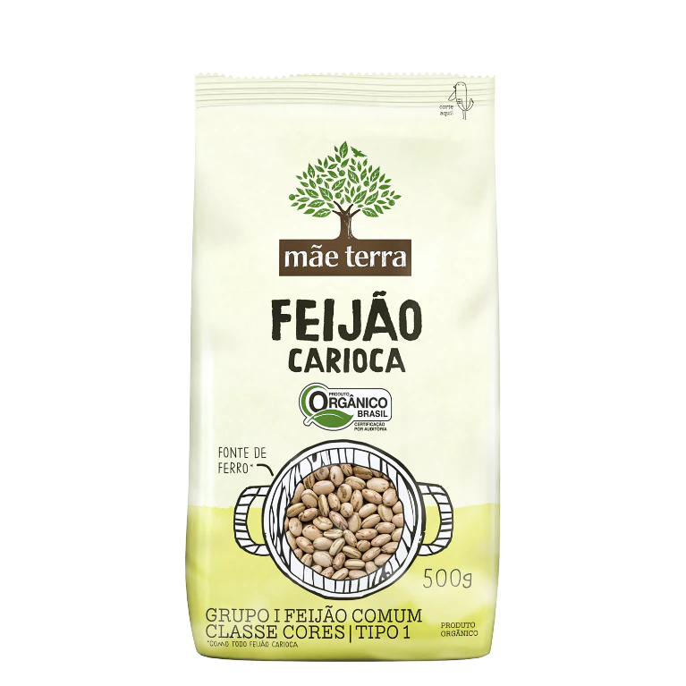

Feijão Organico

Feijão Carioca Orgânico Mãe Terra deixa suas refeições mais saborosas. O feijão de todo dia na versão orgânica e sem agrotóxicos. Orgânico, fonte de ferro e fibras. Livre de agrotóxicos, pesticidas e fertilizantes sintéticos. O Feijão Carioca é super presente no prato do brasileiro, seja formando dupla com o arroz ou enriquecendo saladas, massa de hambúrgueres, bolinhos, tutu e farofas. Rico em fibras que auxiliam no controle do colesterol e no funcionamento do intestino. Acreditamos que a mudança começa pelo nosso prato e que cada escolha importa. Por isso, temos paixão em produzir alimentos naturais e orgânicos que nutrem o corpo, a alma e a nossa mãe Terra. O que acreditamos é simples: uma alimentação natural, composta por alimentos mais próximos dos integrais, é peça-chave para uma vida mais saudável. Assim, apresentamos os tradicionais ingredientes da culinária brasileira cultivados de forma orgânica, livres de agrotóxicos. O Feijão Carioca é super presente no prato do brasileiro, seja formando dupla com o arroz ou enriquecendo saladas, massa de hambúrgueres, bolinhos, tutu e farofas. É rico em fibras que auxiliam no controle do colesterol e no funcionamento do intestino, e minerais como o magnésio e selênio que são essenciais para a saúde do cérebro. Mesmo cheio desses benefícios, ele ainda é fonte de vitaminas do complexo B e ferro, um mineral muito importante para a prevenção e combate da anemia. Além disso, por ser orgânico, o Feijão Carioca Mãe Terra, preocupa não só com o bem-estar do consumidor, como também do produtor rural e do planeta. Além de não utilizar agrotóxicos, pesticidas e fertilizantes sintéticos, a agricultura orgânica prioriza a diversificação de culturas, o que resulta em alimentos, pessoas e planeta mais saudáveis. A gente se orgulha em ser um dos maiores compradores de insumos orgânicos do Brasil, porque sabemos que nossa força de mercado ajuda a desenvolver essa cadeia. E porque acreditamos que dá pra fazer diferente, que cada escolha importa.